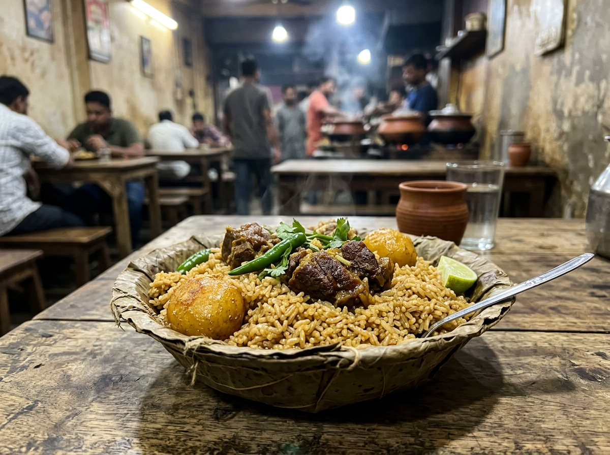
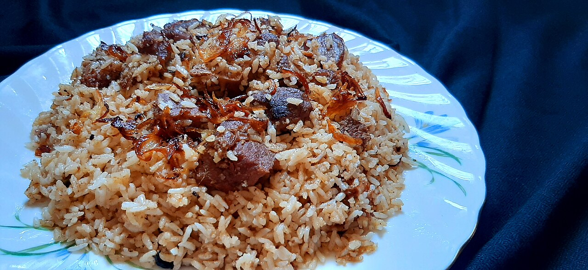
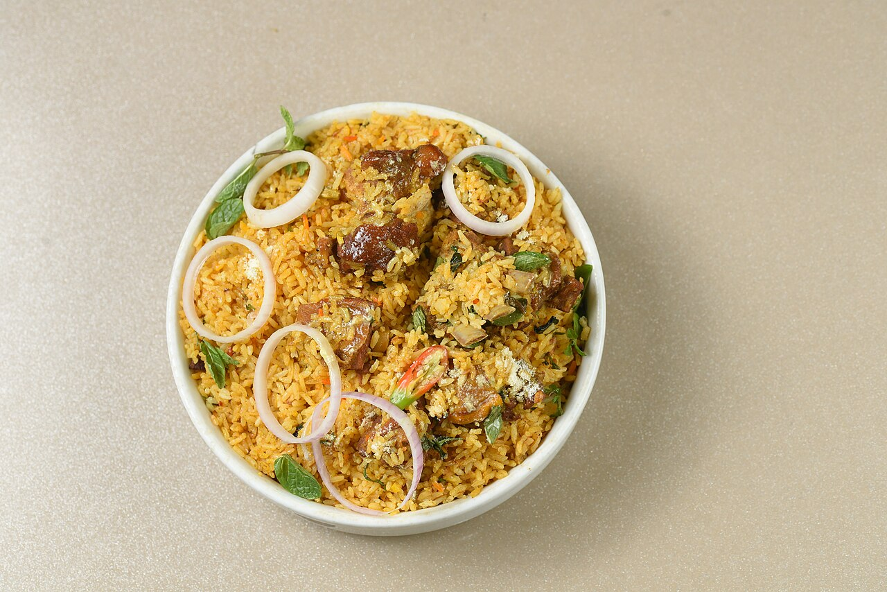
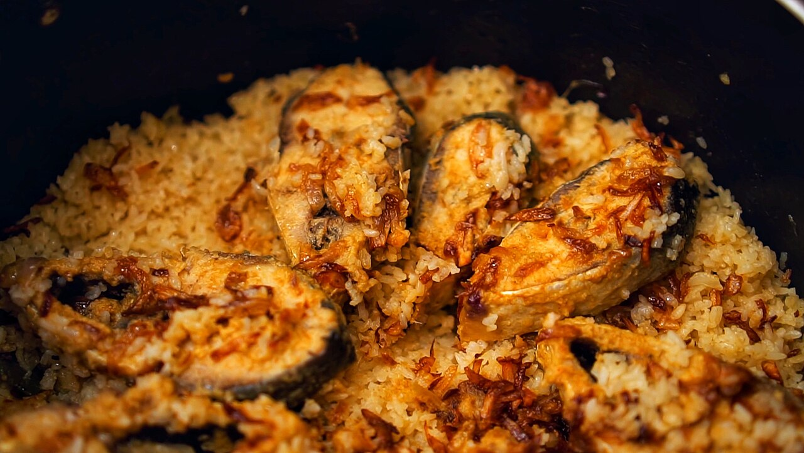

What goes in the degh is what matters.
From the stitched jackfruit-leaf baskets of 1939 Old Dhaka and Khulna's Chui Jhal mutton cauldrons to purple Binni rice steamed inside mountain bamboo in Bandarban—an interactive chronicle of Bangladesh's twenty-eight defining rice dishes.

Across the river deltas, mangrove estuaries, haor wetlands, and forested hill tracts of Bangladesh, rice is never a mere side dish—it is an architectural medium shaped by local soil, water, and vessel.
Explore Dishes by Bangladesh Terroir
Click any of Bangladesh's eight culinary regions on the map or selector bar below to inspect its indigenous rice cultivars, cooking fat medium, and regional dish monographs.

Mustard-Oil Beef Tehari
Born in the 1930s mahallas of Old Dhaka, authentic Tehari rejects clarified butter for the sharp bite of cold-pressed mustard oil. Small-grain Chinigura rice simmers directly inside the spiced beef brisket gravy with whole green chilies.
Dig In
Khulna Chui Jhal Mutton Polao
Across Khulna, Satkhira, and Bagerhat, the woody stems of the Piper chaba vine (Chui Jhal) are peeled into batons and slow-braised with mutton and whole garlic bulbs, infusing fragrant Chinigura polao with a warm, medicinal peppercorn heat.
Explore Monograph
Barishal Bishkhali Ilish Polao
Where the Kirtankhola and Bishkhali rivers meet the southern delta, silver Hilsa steaks are poached in freshly pressed coconut milk and onion paste, then nestled beneath Kalijira polao and golden beresta for final steaming.
Read Delta StudyThe 28 Rice Monographs
Hover or tap any dish card to flip and inspect its flavor compounds, lineage, and botanical aroma icons—or click More Info for the full Dish Display Page.
Living Heirloom Grains
Every Bangladeshi rice dish is governed by the starch architecture of its grain. From Dinajpur's Kalijira and Sherpur's GI-certified Tulshimala to Barishal's slender Balam and Sylhet's glutinous Biroin, each landrace evolved for a distinct pot and fire.